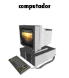
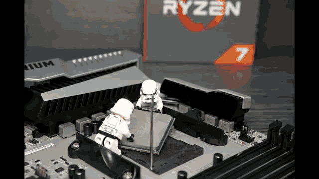
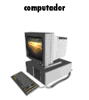
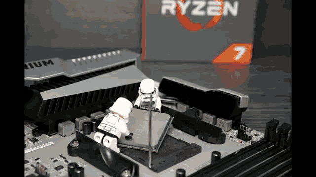
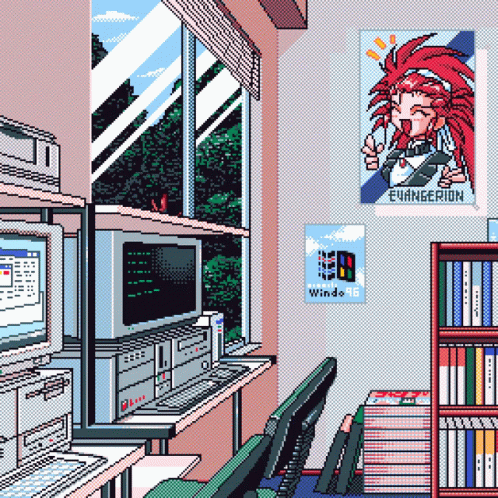

Unidad 1

Unidad 2
Unidad 3

Unidad 4

La arquitectura de computadoras es el diseño conceptual y la estructura operacional fundamental de un sistema de computadoras. Es decir, es un modelo y una descripción funcional de los requerimientos y las implementaciones de diseño para varias partes de una computadora, con especial interés en la forma en que la unidad central de proceso (CPU) trabaja internamente y accede a las direcciones de memoria.
Unidad 1

Unidad 2
Unidad 3

Unidad 4
Prácticas
Diseño de Equipos
